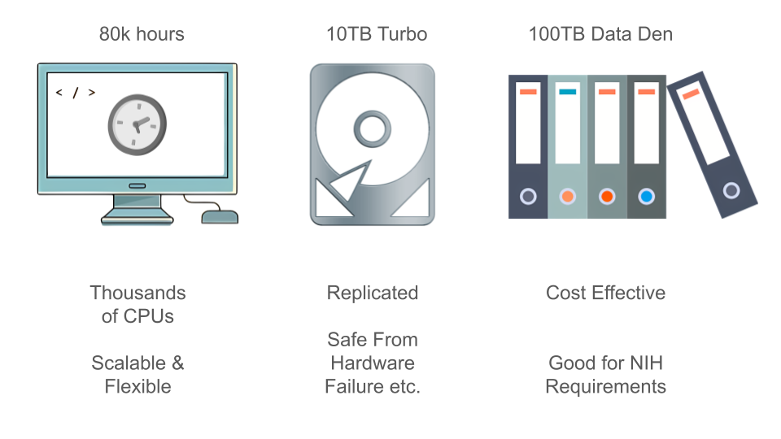

In this module, we will:
- discuss reproducible computing in general
- discuss storage best practices for raw data, anlaysis files,
scripts, etc.
- learn about several institutional storage options (and associated
compute resources)
- learn about the UMRCP and how to request it
- make a plan for enrolling PIs in UMRCP and enabling access to all
researchers
Reproducible Computing
Reproducible computing has become increasingly important in recent
years. As experimental data volumes have increased exponentially, and as
research endeavors have employed more complicated analyses over time,
computation has become a fundamental aspect of virtually every type of
research.
Reproducibility itself is an integral part of the scientific process.
We describe our experiments with sufficient detail so that they can be
replicated and our findings can be confirmed by others, and so that
eventually others may build upon them.
So taking these two things together, the increasing use of computing
in research and the inherent need for reproducibility in the scientific
process, we can start to understand the importance of reproducible
computing.
There are some challenges we must overcome in this realm. When we try
to employ our typical methodologies for general scientific
reproducibility, they may not be sufficient to truly enable others to
recreate our work. In many cases, in order to credibly validate an
analysis, we must be able to not only see and understand the steps of an
analysis, but also to use the same software with the same input data and
perform these same data manipulations ourselves. Trying to achieve this
task with only a descriptive summary of our analysis methods,
particularly when using cutting-edge academic software, may often
produce little more than frustration.
Let’s take a moment to think about our own experiences with this
topic. Can we think of experiences where we encountered challenges while
trying to reproduce the analysis of others? Or while trying to share our
own analyses with colleagues?
There are a number of tools and techniques that have emerged to
address some of these challenges, and to really lower the barrier to
sharing and reproducing our results.
In this workshop we’ll discuss these tools and techniques, we’ll
provide specific guidance for University of Michigan researchers to
address reproducibility concerns, and we’ll use practical examples along
the way to gain experience and emphasize the concepts that we learn.
Storage Best Practices
One simple way to organize our thinking about storage best practices
is to divide the topic into raw data considerations, and considerations
for analysis projects. By separating and focusing on those two aspects,
we can effectively address many of the challenges associated with
each.
Note: The importance of documentation is universal to all aspects of
reproducible research. In considering best practices both for our raw
data and for our analysis projects, we will emphasize the importance of
documentation!
A Generalized Data Flow

Raw Data
When considering best practices for raw data storage, we can
generally orient ourselves around one task - ensure that the data are
safe.
Safe from:
- Accidental deletion
- Hardware failure
- Loss of access
With this in mind, we recommend placing your raw experimental data
into a specific designated location which is solely
dedicated to storing your raw data.
Soon we’ll talk about specific options for UMich researchers, but for
now we’ll just speak of the general process. Data that cannot easily be
re-obtained should be treated with great care. By following the
recommendations here, we can achieve this and have peace of mind that we
are preserving our raw data and our capabilities for reproducible
research well into the future.
Recommended:
- Designated location for storing raw data
- Limit write access of stored data files
- Use institutional storage
- Large file sizes and large total allocations
- Long-term support
- Hardware redundancy
- Location redundancy
Another thing to mention for raw data best practices is the procedure
of checking file integrity. Whenever transferring data from one storage
location to another, and especially while doing so over a network
connection, it is good practice to follow up with a file integrity
check. Briefly, we use software to inspect our files and determine if
any of the contents have changed. In a later module we’ll have a chance
to try this ourselves, using the md5sum utility. This is a
relatively efficient way of verifying file integrity after a file
transfer.
Analysis Projects
We can begin thinking of our next task - handling data and organizing
files and artifacts for our analysis - by starting with the idea of the
data flow described above. One of the first tasks in this area is to set
up a new location for your analysis and make a copy of your raw data
there.
Some considerations:
- Fast storage, well suited for computation
- Project organization that facilitates reproducibility
- In-progress analyses, cleanup procedures, and end-to-end repeatable
analyses
When we think about fast storage that is well suited for computation,
we mostly contrast that with our long-term archival storage. A storage
option is well suited for computation if it is accessible via
high-throughput connection to sufficiently powerful processing hardware.
The speed of reading and writing from this location can greatly affect
processing times of your analysis, depending on the steps involved.
In terms of project organization, generally we want to have distinct
locations for specific purposes, and preferably organizing things in a
consistent manner for all of our projects.
In a particular project, you may want:
input_data directory for copy of raw datascripts directory for analysis scripts- Directories for intermediates, log files, and final outputs
README.txt for the project
- Optional
docs directory for extensive documentation,
supporting works, etc.
A useful idea for our project directory layouts is to think about the
project life cycle and work towards an end-goal of a reproducible
analysis. While at the beginning of an analysis many things may be
flexible, at the end we will want to be able to re-execute the analysis
starting from the raw input data and running all the way until it
produces the final outputs.
Taking time to segregate specific efforts within a project,
documenting our steps as we perform in-progress analyses, performing
cleanups where needed, and similar efforts will aid us as we work
towards that goal.
Think ahead when designing the layout of your projects. If you will
be trying several related analysis approaches using the same input data,
but intend on using results from only one of the evaluated methods, it
may make sense to intentionally subdivide the contents of your project
directory accordingly. If you have several distinct analyses that may
use the same input data, then perhaps creating separate projects for
each of them will make the most sense. It’s hard to be totally
prescriptive when making recommendations here, but through our example
we hope to spark the kinds of conversations and the types of thinking
that are required here.

One last note on handling and organizing analysis projects - use some
form of identification system for projects in your lab. This simplifies
communication and record keeping, in addition to the organizational
benefits.
Some ideas for project identification systems:
- Codenames
- Alphanumeric IDs
Storage Options for UMich Researchers
We’ve discussed best practices for data, analysis intermediates and
scripts, etc. in general terms, but now we’ll have the opportunity to
revisit these ideas while highlighting specific options and
recommendations for UMich researchers. By the end of this module, we
will understand our numerous storage options available to us. Looking
forward to future modules, we’ll also run exercises that interact with
some of these storage allocations as we proceed, including Data Den and
its unique characteristics and usage patterns.
What is ARC?
The vast majority of computing resources we’ll be discussing in the
workshop are provided and managed by ARC - Advanced Research Computing
at University of Michigan. The shared computing cluster that we’ll be
using in the workshop is run by ARC, and the storage allocations
likewise are provided by ARC. Their mission is to provide university
researchers with the advanced computing resources that they need, and
they’ve been working with research groups in various compute intensive
fields to achieve this.
Later in this module we’ll discuss in detail how to request resources
through ARC, but for now we’ll focus on the storage topic and cover some
important storage options that ARC provides.
Data Den
Data Den is a low-cost, highly durable storage system operated by
ARC.
- Tape-based archival storage
- The largest and most affordable storage available through ARC.
- Can only access this indirectly
- i.e. use Globus to interface with this storage.
Note: Data Den has a file size limitation - it does not handle large
amounts of small files. Optimal file size is in the multi-gigabyte
range. The limitation 10,000 files per TB of storage.
Turbo
Turbo is a high-capacity, reliable, and fast storage system operated
by ARC. It is more costly than Data Den.
- More costly than Data Den
- Tuned for files moderate to large in size, but can also easily
accomodate small files
- Can be accessed through the High-Performance Computing (HPC)
cluster
Fast storage like Turbo is well-equipped for computing direcly from
it. Turbo supports fast read/write times, and is an excellent place to
perform analyses.
Turbo and Data Den - Cost Difference
We discussed above that Data Den is slow, unsuited for analysis, yet
cost-effective, while Turbo is fast, well-tuned for analysis, and more
costly. To put some numbers to this price discussion, see the following
table of cost per TB per year:
| Turbo |
$77.88 |
$156.22 |
| Data Den |
NA |
$20.04 |
Notice that Turbo storage is about 8x more costly than Data Den for
the same amount of replicated storage.
Note: Data Den is only available in the replicated format.
Home, Scratch, tmp, and others
- Home directory (80 GB quota)
- Scratch directory (10 TB and 1,000,000 file quota)
- /scratch/account_root/account/uniqname
- Not persistent over time
- Automatically deleted if not accessed in 60 days
- Local disk (4 TB shared)
- /tmp
- Not persistent across machines
Institutional Storage vs Other Storage
| Turbo |
Laptop Storage |
| Data Den |
Storage on a Shared Lab Computer |
| Home / Scratch* |
Portable Hard Drive / Flash Drive |
| MiStorage |
Cloud Storage |
UMRCP

The figure above highlights the most important and impressive details
of the UMRCP, but you can find full details of the resources offered
through this program on the UMRCP
page of ARC’s website.
Signing up for the UMRCP
Within that site, there is another page that I highly recommend as a
great place to start - the UMRCP
Requesting Resources Guide. There you’ll find details about the
signup process. After signing up, you’ll be able to use some of the
numerous compute nodes available through ARC, as well as the various
storage tiers described above.

Additional Resources Available Through HITS RCI

In addition to the resources provided through the UMRCP, some
researchers within the medical system will have additonal resources
available through UM Health Information Technology & Services
(HITS). Through strategic investments in High Performance Computing by
Michigan Medicine, eligible researchers can enjoy additional allocations
for the described resources - most notably unlimited Data Den
storage.
In the documentation for the UMRCP and the UMRCI, you’ll see that
they recommend first using the UMRCP resources (available to all
university researchers) and then transitioning to these additional HITS
UMRCI resources (available to Michigan Medicine researchers) when
possible. In any case, since these allocations are managed by ARC for
all univerisity researchers - Michigan Medicne or otherwise - you’ll be
using the same forms and procedures to request resources and use them.
However, the billing details may change depending on this
eligibility.
Link
to HITS page on UMRCI
Great Lakes, Armis2, and Lighthouse Clusters
This module overall is primarily focused on storage-related topics.
We’ve briefly mentioned that in addition to storage resources, ARC also
provides access to high-performance computing (HPC) hardware as well.
While in this workshop we’ll just be focusing on one of them, in fact
there are several HPC clusters that are available to UMich researchers,
in order to meet various needs.
When discussing research needs, especially in anticipation of
requesting UMRCP resources and filling out the required form, we should
discuss a little bit about three HPC options provided through ARC:
- Great Lakes
- Armis2 (HIPAA-aligned)
- Lighthouse (Researcher-owned hardware)
We’ll be discussing Great Lakes at length throughout this workshop
and using it for our example analyses. We can think of it as a
general-purpose HPC cluster, which is suitable for many different kinds
of research.
Armis2 is similar in feel to the Great Lakes cluster, except it is
configured with specific security measures in place to enable analysis
of sensitive data, such as export-controlled or HIPAA protected data.
When filling out the UMRCP form, you can make selections for sensitive
data needs, which will provide CPU hours on Armis2 and associated
storage. We’ll see later, that we have flexibility in how we allocate
resources between e.g. Great Lakes and Armis2.
Note: There is a separate, security-enhanced Turbo allocation that is
also HIPAA aligned that should be used with Armis2.
Lighthouse is also similar in feel to the Great Lakes cluster, except
it is a cluster comprised entirely of researcher-owned hardware.
Contrasting this with Great Lakes where we are only responsible for the
cost of the resources we use, on Lighthouse, a researcher will fund the
entirety of the hardware and receive 100% of its availability. This can
be a good choice for researchers who are expected to have near-constant
compute usage needs, or who require instant availability of HPC
resources.
Main ideas:
- PI must be the one to fill out form
- PI will automatically become an administrator
- Others can become administrators (lab manager) or members
Administrators vs Users
| PI |
✅ |
✅ |
⏳ |
⏳ |
✅ |
| Lab Manager |
✅ |
✅ |
⏳ |
⏳ |
✅ |
| Grad Student |
|
|
✅ |
✅ |
|
Legend:
✅ = Frequent
⏳ = Occasional
Resource Management Portal

A key part of how we will manage our ARC resources is through their
Resource Management Portal, shown here.
This portal can be found at https://portal.arc.umich.edu.
Let’s not go there just yet, but discuss what we see in this
screenshot, and then move on to the exercise. We’ll learn about some of
the differences that we may see depending on our current status and
existing resources, and we’ll learn that there are some differences in
the best way to request UMRCP resources depending on these details.
Exercise: Make a Game Plan for UMRCP
In this exercise we will determine the needs for UMRCP enrollment by
audience & their PIs.
There are two video links below. There’s a decent amount of overlap
in the content, and the main ideas are pretty similar. In either case,
we will be filling out the UMRCP web forms as shown in the videos.
Depending on our current status though, we may have different optimal
starting points and different things to consider.
UMRCP
How to Enroll - New to ARC Services
UMRCP
How to Enroll - Existing Owner of ARC Services
